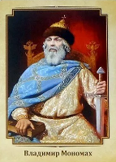

Владимир Святославич

Владимир Мономах - князь киевский, родился 26 мая 1053 года. Еще в юношеском возрасте Владимир Мономах стал ростовским князем. Затем управлял Смоленском, позже – Черниговом. Большой заслугой в биографии князя Владимира Мономаха стал разгром половцев. Владимир Мономах написал несколько произведений, например «Поучение», «Письмо Олегу Святославичу», «Молитва». Умер князь 19 мая 1125 года.